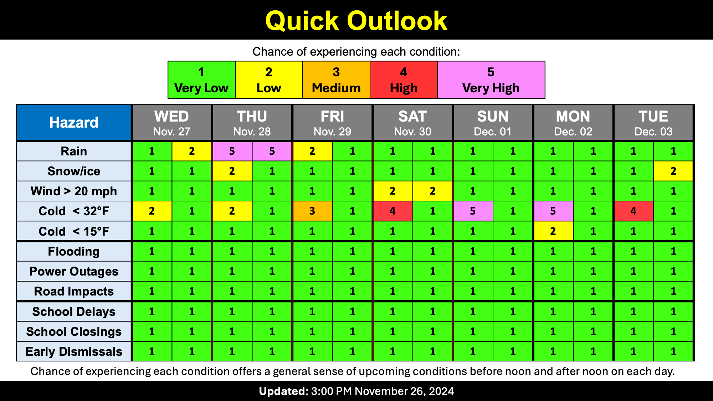

Warning: this is an old update that has been archived. This update is not current.
Wet Thanksgiving
School Forecast
through Friday December 6th
Last updated: 3:00PM Tuesday November 26, 2024
| 0% (Nope) |
|---|
| 0% (Nope) |
|---|
| 0% (Nope) |
|---|
___________________
3:00PM Tuesday:
Its shaping up to be a wet week here in Ulster County. Today's storm has dropped about half an inch of rain on the Kingston area. This is in addition to the 1.5 inches that fell during last week's storm. Another storm will move through the region bringing us rain on Thursday. Wet snow is likely in the Catskills, but is not likely to reach the valley areas. The coldest air of the season will move in for the weekend.
The Forecast:
After a calm Wednesday, expect rain to move in by about sunrise Thursday. Rain is likely through most of the daytime hours on Thursday before tapering off in the evening. We're likely to pick up about an inch of rain. Snow is not likely in the Kingston area, but some wet snowflakes can't completely be ruled out. Better chances for snow are out in the Catskills, where up to about 6 inches of wet snow is possible. Slick roads are likely Thursday morning up past the Ashokan Reservoir and out past Accord/Kerhonkson on Route 209. As for temperatures, they will generally get up to about 40 degrees during the daytime, but will fall into the 20s overnight this weekend. Make sure you bundle up Monday morning as you head back to work or school - it's gonna be chilly!
Have a safe and happy Thanksgiving
-Ethan

KingstonSnows | Kingston, New York
Website built by Ethan Burwell